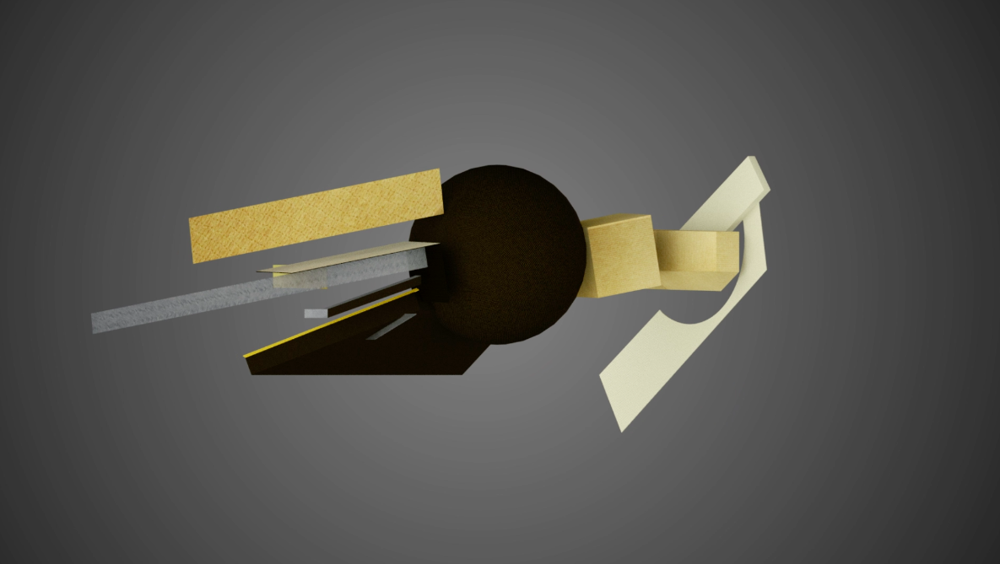
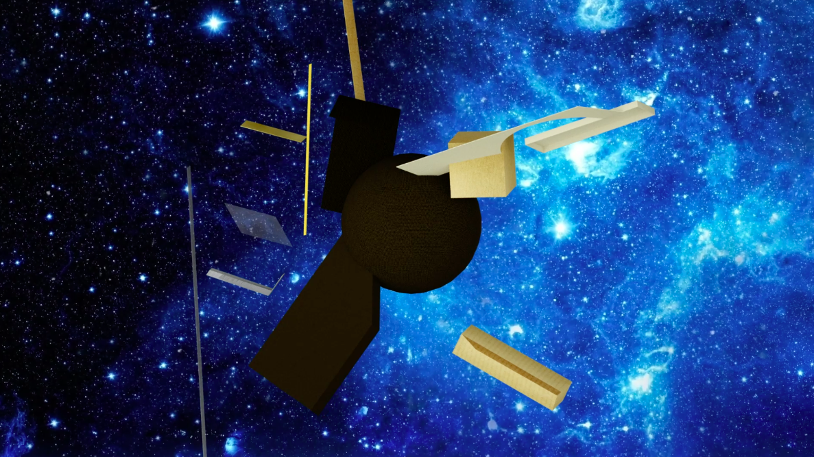
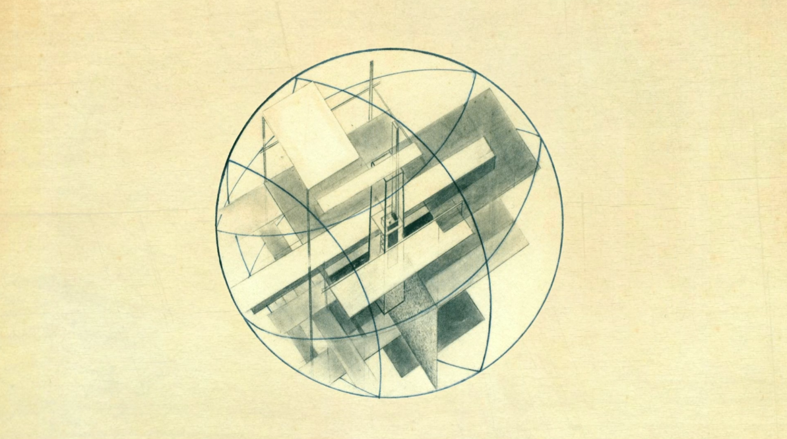
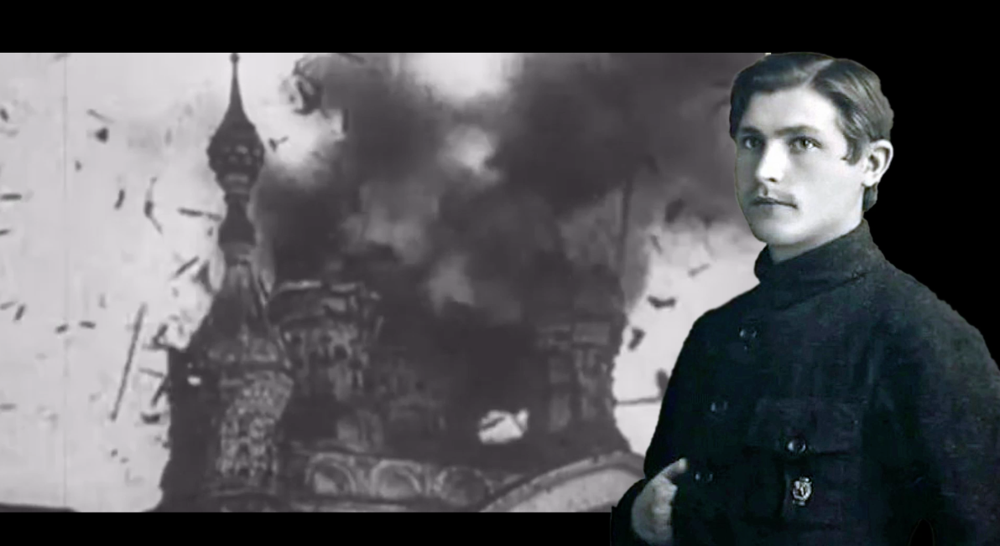
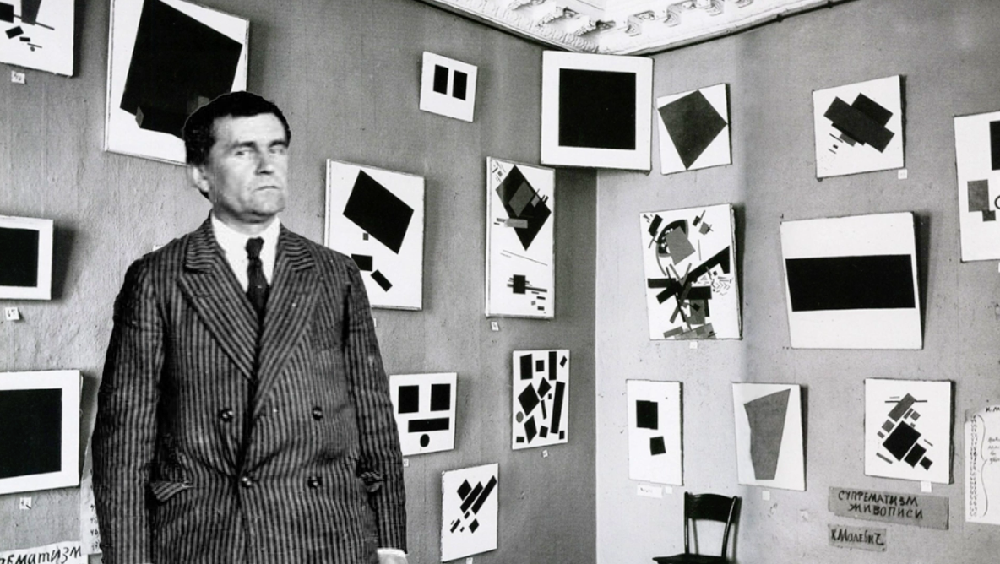
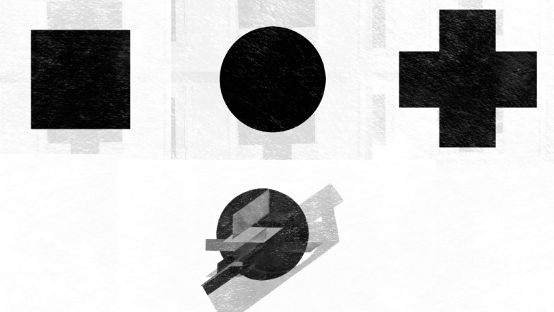
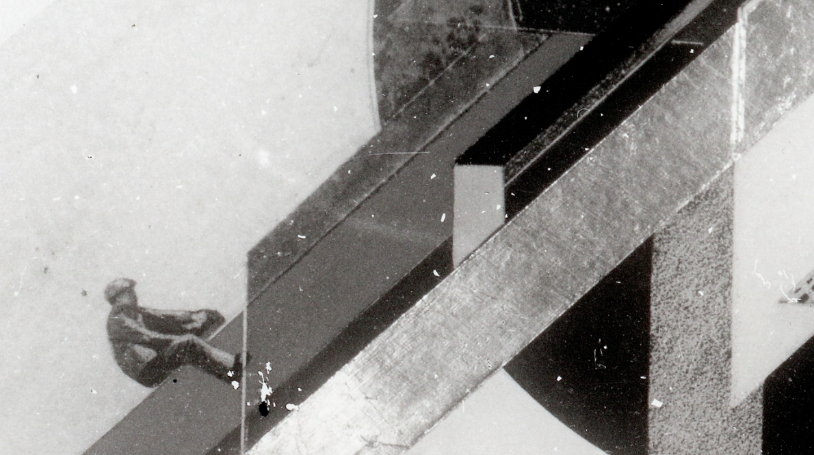
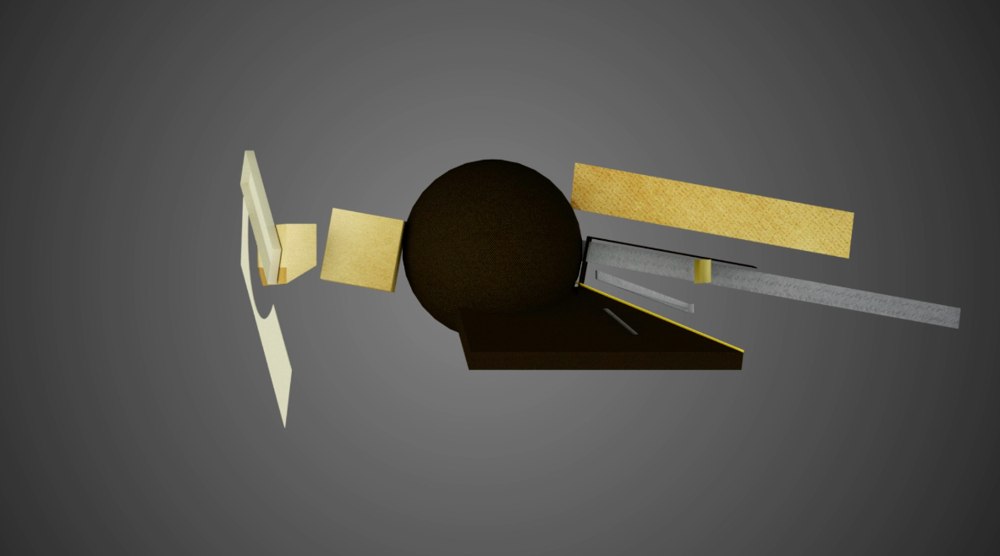

Aquí hay un modelo 3D de “La Ciudad Dinámica” de Klutsis. Observarlo desde diferentes ángulos revela varias ideas que fueron cruciales para el autor.
En el centro de “La Ciudad Dinámica” se encuentra el concepto de representar un planeta a la deriva por el espacio, donde diferentes planos minimalistas se cruzan con la esfera para transmitir mensajes asociados con las posibilidades de los nuevos avances tecnológicos.
Klutsis inicialmente pintó la primera versión de “La Ciudad Dinámica” sobre una tabla de madera destinada para la pintura tradicional de iconos.
Siendo comunista acérrimo, Klutsis consideraba la religión como una reliquia del viejo mundo que debería ser erradicada, reemplazada por un mundo nuevo y moderno con horizontes tecnológicos y educativos abiertos, fundado en principios de igualdad y respeto a la clase trabajadora.
Cuando Kazimir Malevich presentó por primera vez su 'Cuadrado Negro', lo colocó en una esquina entre dos paredes, igualmente cómo se coloca un icono en los hogares ortodoxos.
Posteriormente, Malevich creó el Tríptico: Cuadrado Negro, Círculo Negro y Cruz Negra. El Círculo Negro sirve de base para el cuadro de Klutsis "La Ciudad Dinámica".
Este proyecto sentó las bases para el fotomontaje en la URSS, ya que Klutsis utilizó esta técnica en las versiones posteriores de “La Ciudad Dinámica”.
Puedes rotar el modelo de “La Ciudad Dinámica” tú mismo y quizás descubrirás nuevas perspectivas y significados dentro de él.
